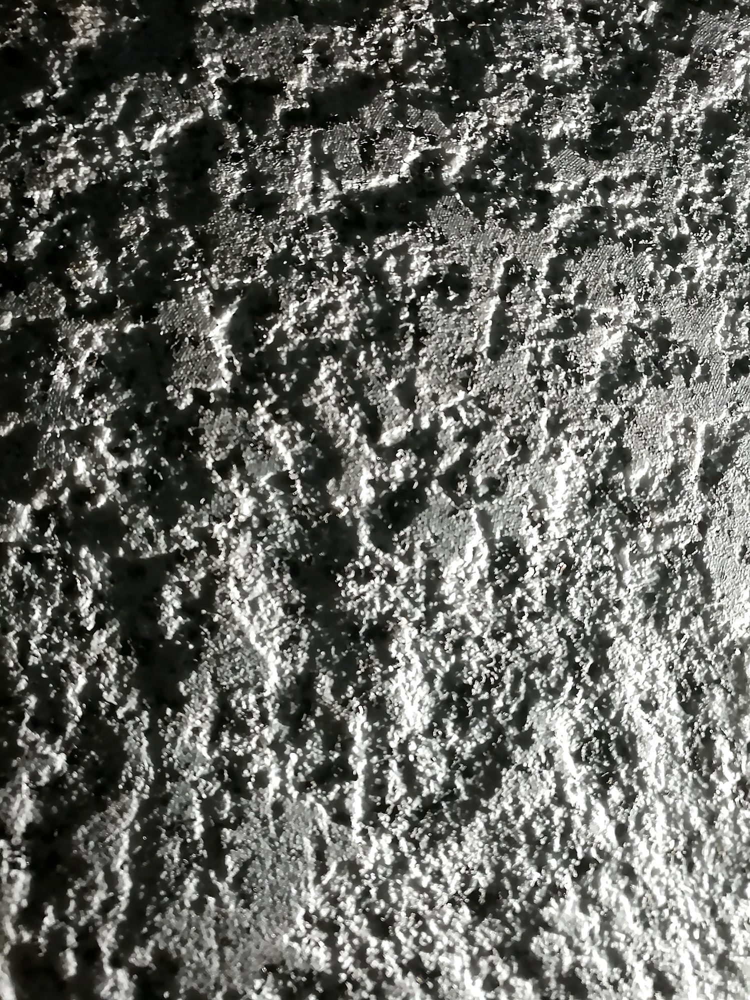
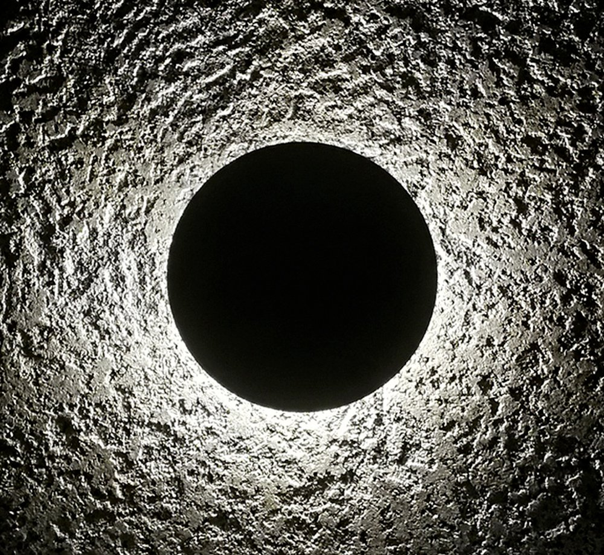

Luna
Luna est une applique murale en granit du Sidobre. Sa texture bouchardée éclairée par une lumière rasante nous dévoile une surface lunaire aux multiples brillances. En collaboration avec
Victor Mauro
. Réalisé avec les
Ateliers de Vabre Granit
, l'
association Granit et Pierres du Sidobre
,
SVTU
et
iGuzzini
.
«La Madre Luna, hoy vestida de toda su redondez, los bañaba con su mejor luz…» Rafael Dumett, El espía del Inca.
back


projet suivant
fr
/
en